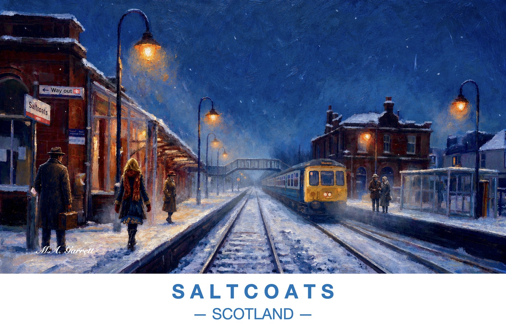

Saltcoats Station, Winter Night
A snowy night on the platforms at Saltcoats railway station. Lamps glow over the tracks as a train pulls in and passengers wait beneath the old station buildings.
Paintings of the Ayrshire coast

A snowy night on the platforms at Saltcoats railway station. Lamps glow over the tracks as a train pulls in and passengers wait beneath the old station buildings.